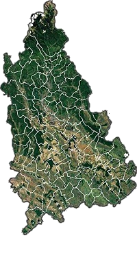

Obiective Culturale Dâmbovița
Județul Dâmbovița
Județul Dâmbovița are o suprafață de 4.054 km² (1,7 % din suprafața țării). Este situat în partea central-sudică a țării, suprapunându-se bazinelor hidrografice ale râurilor Ialomița și Dâmbovița. Județele vecine sunt:
- Brașov la nord;
- Prahova la est;
- Ilfov la sud-est;
- Giurgiu la sud;
- Teleorman la sud-vest;
- Argeș la vest.
Relief
Teritoriul este dispus în trei trepte de relief, ce se succed de la nord spre sud pe o diferență de nivel de cca. 2400 m; acestea sunt alcătuite din munți (9 %), dealuri (41 %) și câmpii (50 %). Etajat de la câmpia joasă până la cele mai înalte piscuri ale Munților Bucegi, relieful județului Dâmbovița prezintă o mare diversitate peisagistică. Succesiunea treptelor de relief poartă atât amprenta factorilor geologici, cât și a celor fiziogeografici, care au participat activ la formarea și evoluția lor. Cea mai veche și mai înaltă unitate de relief, situată în partea de nord a județului, este formată de munții Leaota și Bucegi. Primul masiv,fiind alcătuit din șisturi cristaline, se deosebește ca morfologie de Munții Bucegi, în a căror alcătuire predomină calcarele, gresiile și conglomeratele. Subcarpații alcătuiesc cea de-a doua treaptă de relief și ocupă 23% din suprafața județului. Din punct de vedere geologic sunt alcătuiți din depozite paleogene la nord și neogene la sud. Aproape toată gama formațiunilor este cutată într-o succesiune latitudinală de sinclinale și anticlinale puternic faliate. Nota dominantă a reliefului o dau fenomenele de alunecare și de eroziune torențială, care scot din circuitul agricol suprafețe apreciabile de teren. Piemontul Cândești constituie o treaptă de relief care se deosebește prin alcătuirea geologică, tectonică și morfologică atât de Subcarpați, cât și de zona de câmpie. Interfluviile sunt netede, împădurite, ușor înclinate spre sud și fragmentate de văi mult mai adâncite în cuvertura de pietrișuri. Câmpiile, care ocupă peste 50% din suprafața județului, alcătuiesc cea mai joasă și cea mai tânără treaptă de relief. Orientarea generală a interfluviilor , nord-vest—sud-est, panta mică a acestora, lățimea și gradul slab de fragmentare dau nota dominantă a acestei unități. Din forajele existente se constată prezența unei cuverturi de pietrișuri de grosimi variabile peste care stau depozite loessoide sau de luncă. În condiții specifice de climă și vegetație, pe aceste depozite s-au format cele mai fertile soluri din județ.
Municipii
- Târgoviște
- Moreni
Orașe
- Găești
- Pucioasa
- Titu
- Fieni
- Răcari